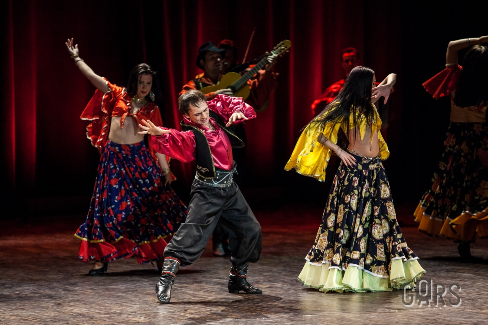
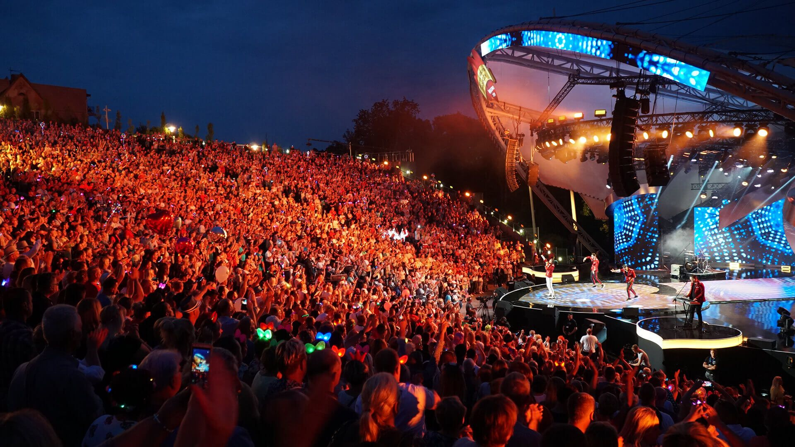
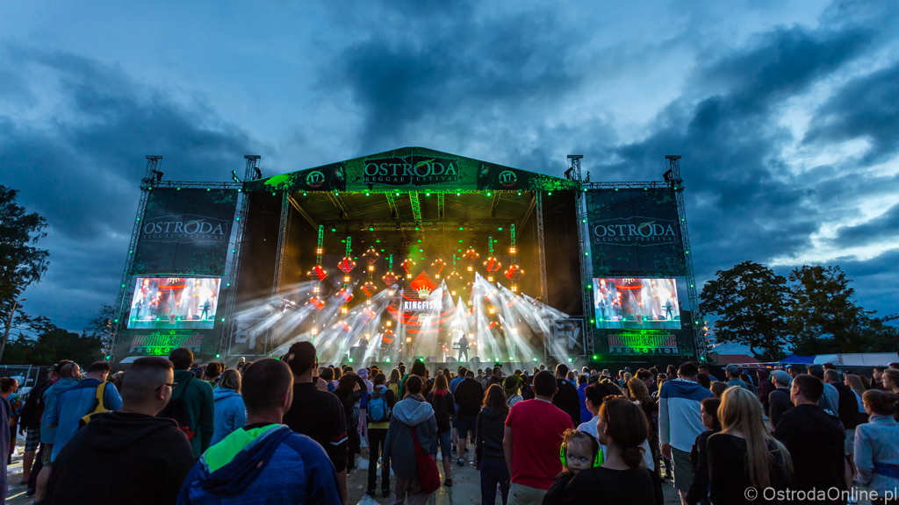

Roma Music and Dance Concert
To coroczne wydarzenie, jest prawdziwym świętem kultury i muzyki romskiej. Koncert przyciąga zarówno lokalnych mieszkańców, jak i turystów z całego kraju, którzy przyjeżdżają, aby doświadczyć unikalnej atmosfery i cieszyć się autentycznymi występami muzycznymi i tanecznymi.
ZOBACZ
Mrągowo Country Picnic
Festiwal przyciąga miłośników muzyki country, westernów i Dzikiego Zachodu z całego świata. Wydarzenie to jest znane z swojej przyjaznej atmosfery, różnorodności muzycznej i licznych atrakcji, takich jak pokazy rodeo, konkursy strzeleckie i jazda konna.
ZOBACZ
Ostróda Reggae Festival
To jest jedno z najważniejszych wydarzeń muzycznych na Warmii i Mazurach, które odbyło się w sierpniu 2024 roku.Festiwal przyciąga miłośników muzyki reggae z całego świata, oferując im możliwość zobaczenia na żywo niektórych z największych gwiazd gatunku.\nOprócz koncertów, festiwal oferuje również warsztaty muzyczne, dyskusje panelowe i szereg innych atrakcji.
ZOBACZO Warmii i Mazurach
Warmia i Mazury to malowniczy region w północno-wschodniej Polsce. Jest tam bardzo dużo jezior, a największe z nich to Mamry, Śniardwy, Niegocin, Orzysz, Jagodne i Tałty. Warmia i Mazury są położone w północno-wschodniej części kraju, a województwo liczy ponad 1,42 miliona mieszkańców. Powierzchnia tego województwa wynosi 24 173 km². Siedzibą wojewody tego województwa jest miasto Olsztyn. To piękna kraina, często odwiedzana przez turystów, którzy cenią sobie ciszę i spokój